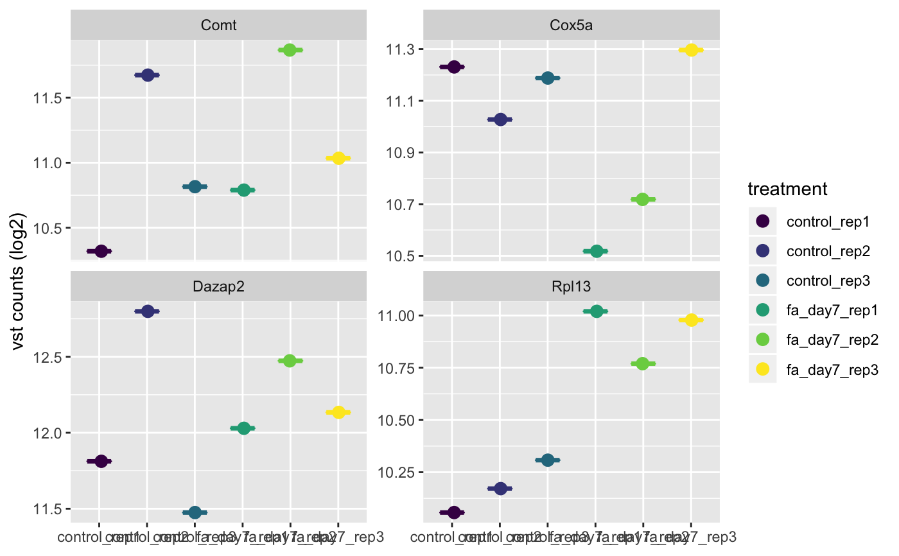
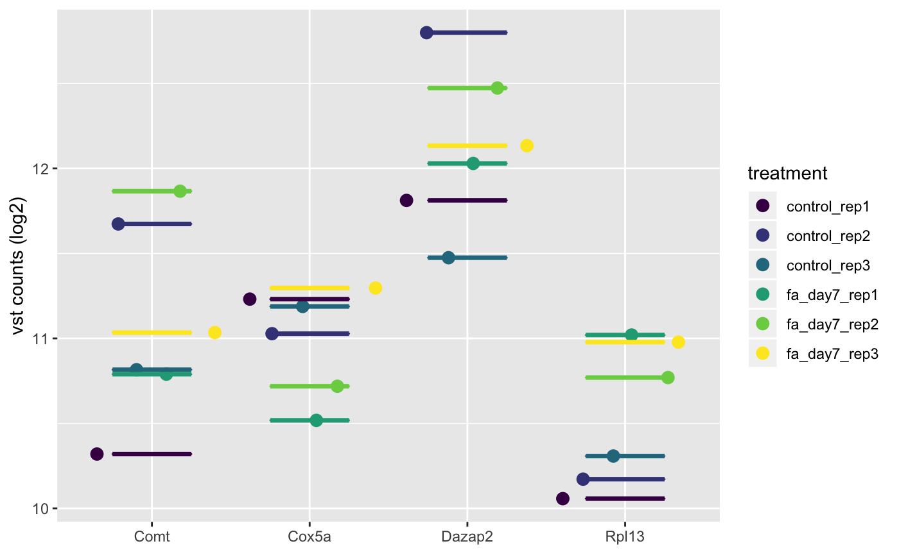

Plot Gene Expression
# S4 method for bcbioRNASeq plotGene(object, genes, normalized = c("vst", "rlog", "tmm", "rle", "tpm", "fpkm"), interestingGroups = NULL, medianLine = TRUE, color = getOption("basejump.discrete.color", NULL), legend = getOption("basejump.legend", TRUE), style = c("facet", "wide"))
| object | Object. |
|---|---|
| genes |
|
| normalized |
|
| interestingGroups |
|
| medianLine |
|
| color |
|
| legend |
|
| style |
|
ggplot.
style = "facet": ggplot grouped by sampleName, with
ggplot2::facet_wrap() applied to panel the samples.
style = "wide": ggplot in wide format, with genes on the x-axis.
data(bcb) object <- bcb g2s <- Gene2Symbol(object) geneIDs <- head(g2s[["geneID"]]) print(geneIDs)#> [1] "ENSMUSG00000000088" "ENSMUSG00000000326" "ENSMUSG00000000346" #> [4] "ENSMUSG00000000740" "ENSMUSG00000001175" "ENSMUSG00000001666"geneNames <- head(g2s[["geneName"]]) print(geneNames)#> [1] "Cox5a" "Comt" "Dazap2" "Rpl13" "Calm1" "Ddt"plotGene( object = object, genes = geneIDs, normalized = "vst", style = "facet" )plotGene( object = object, genes = geneNames, normalized = "vst", style = "wide" )